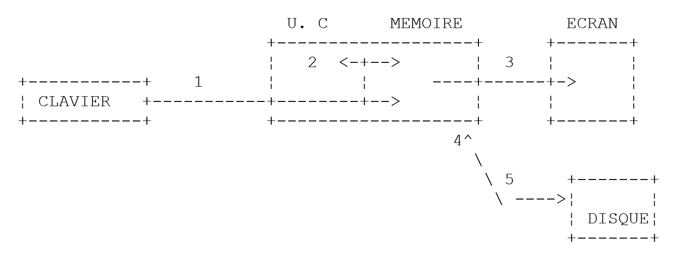

2. Die Grundlagen der Java-Sprache
2.1. Einleitung
Zunächst betrachten wir Java als eine traditionelle Programmiersprache. Auf Objekte gehen wir später ein.
In einem Programm gibt es zwei Dinge
- Daten
- die Anweisungen, die sie bearbeiten
Im Allgemeinen versuchen wir, Daten von Anweisungen zu trennen:

2.2. Java-Daten
Java verwendet die folgenden Datentypen:
- Ganzzahlen
- Gleitkommazahlen
- Zeichen und Zeichenfolgen
- Boolesche Werte
- Objekte
2.2.1. Vordefinierte Datentypen
Typ | Kodierung | Bereich |
char | 2 Bytes | Unicode-Zeichen |
int | 4 Bytes | [-231, 231 -1] |
long | 8 Bytes | [-263, 263 -1] |
Byte | 1 Byte | [-27, 27 -1] |
short | 2 Bytes | [-2(15), 2(15),-1] |
float | 4 Bytes | [3,410⁻³⁸, 3,410³⁸] im Absolutwert |
double | 8 Bytes | [1,7 × 10⁻³⁰⁸, 1,7 × 10³⁰⁸] im Absolutwert |
boolesch | 1 Bit | wahr, falsch |
Zeichenkette | Objektreferenz | Zeichenkette |
Datum | Objektreferenz | Datum |
Zeichen | Objektreferenz | Zeichen |
Ganzzahl | Objektreferenz | int |
Long | Objektreferenz | long |
Byte | Objektreferenz | Byte |
Float | Objektreferenz | Float |
Double | Objektreferenz | double |
Boolesche | Objektreferenz | Boolesche |
2.2.2. Literal-Datennotation
Ganzzahl | 145, -7, 0xFF (hexadezimal) |
double | 134,789, -45E-18 (-45 × 10⁻¹⁸) |
Float | 134,789F, -45E-18F (-45 × 10⁻¹⁸) |
Zeichen | 'A', 'b' |
Zeichenkette | "today" |
Boolescher Wert | wahr, falsch |
Datum | new Date(13,10,1954) (Tag, Monat, Jahr) |
2.2.3. Datendeklaration
2.2.3.1. Die Rolle von Deklarationen
Ein Programm verarbeitet Daten, die durch einen Namen und einen Typ gekennzeichnet sind. Diese Daten werden im Speicher abgelegt. Bei der Kompilierung des Programms weist der Compiler jedem Datenelement einen Speicherplatz zu, der durch eine Adresse und eine Größe gekennzeichnet ist. Dies geschieht anhand der vom Programmierer vorgenommenen Deklarationen.
Darüber hinaus ermöglichen diese Deklarationen dem Compiler, Programmierfehler zu erkennen. So wird die Operation
x=x*2;
wird beispielsweise als fehlerhaft deklariert, wenn x eine Zeichenkette ist.
2.2.3.2. Deklaration von Konstanten
Die Syntax für die Deklaration einer Konstante lautet wie folgt:
**<mark style="background-color: #ffff00">final </mark>**<mark style="background-color: #ffff00">Typ Name=Wert; </mark> //definiert eine Konstante name=value
Beispiel: final float PI=3.141592F;
Hinweis
Warum Konstanten deklarieren?
- Das Programm ist leichter zu lesen, wenn die Konstante einen aussagekräftigen Namen erhält:
Beispiel: *final float VAT\_rate=0.186F*;
- Das Programm lässt sich leichter anpassen, wenn die „Konstante“ geändert werden muss. Wenn sich im vorigen Fall der Mehrwertsteuersatz auf 33 % ändert, muss daher lediglich die Anweisung geändert werden, die ihren Wert definiert:
*final float tax\_rate=0.33F*;
Hätten wir 0,186 explizit im Programm verwendet, müssten wir zahlreiche Anweisungen ändern.
2.2.3.3. Variablendeklaration
Eine Variable wird durch einen Namen identifiziert und bezieht sich auf einen Datentyp. Ein Java-Variablenname besteht aus n Zeichen, von denen das erste ein Buchstabe sein muss und die restlichen Buchstaben oder Ziffern sein können. Java unterscheidet zwischen Groß- und Kleinbuchstaben. Daher sind die Variablen FIN und fin unterschiedlich.
Variablen können bei ihrer Deklaration initialisiert werden. Die Syntax zur Deklaration einer oder mehrerer Variablen lautet:
wobei Typbezeichner ein vordefinierter Typ oder ein vom Programmierer definierter Objekttyp ist.
2.2.4. Konvertierungen zwischen Zahlen und Zeichenfolgen
Zahl -> Zeichenkette | "" + Zahl |
Zeichenkette -> int | Integer.parseInt(Zeichenkette) |
Zeichenkette -> Long | Long.parseLong(Zeichenkette) |
Zeichenkette -> Double | Double.valueOf(Zeichenkette).doubleValue() |
Zeichenkette -> Float | Float.valueOf(Zeichenkette).floatValue() |
Hier ist ein Programm, das die wichtigsten Techniken zur Konvertierung zwischen Zahlen und Zeichenfolgen veranschaulicht. Die Konvertierung einer Zeichenfolge in eine Zahl kann fehlschlagen, wenn die Zeichenfolge keine gültige Zahl darstellt. Dies führt zu einem schwerwiegenden Fehler, der in Java als Ausnahme bezeichnet wird. Dieser Fehler kann mit dem folgenden try/catch-Block behandelt werden:
try{
appel de la fonction susceptible de générer l'exception
} catch (Exception e){
traiter l'exception e
}
instruction suivante
Wenn die Funktion keine Ausnahme auslöst, fährt das Programm mit der nächsten Anweisung fort; andernfalls springt es in den Körper der catch-Klausel und fährt dann mit der nächsten Anweisung fort. Wir werden später auf die Ausnahmebehandlung zurückkommen.
import java.io.*;
public class conv1{
public static void main(String arg[]){
String S;
final int i=10;
final long l=100000;
final float f=(float)45.78;
double d=-14.98;
// number --> string
S=""+i;
affiche(S);
S=""+l;
affiche(S);
S=""+f;
affiche(S);
S=""+d;
affiche(S);
//boolean --> string
final boolean b=false;
S=""+new Boolean(b);
affiche(S);
// string --> int
int i1;
i1=Integer.parseInt("10");
affiche(""+i1);
try{
i1=Integer.parseInt("10.67");
affiche(""+i1);
} catch (Exception e){
affiche("Erreur "+e);
}
// string --> long
long l1;
l1=Long.parseLong("100");
affiche(""+l1);
try{
l1=Long.parseLong("10.675");
affiche(""+l1);
} catch (Exception e){
affiche("Erreur "+e);
}
// chain --> double
double d1;
d1=Double.valueOf("100.87").doubleValue();
affiche(""+d1);
try{
d1=Double.valueOf("abcd").doubleValue();
affiche(""+d1);
} catch (Exception e){
affiche("Erreur "+e);
}
// string --> float
float f1;
f1=Float.valueOf("100.87").floatValue();
affiche(""+f1);
try{
d1=Float.valueOf("abcd").floatValue();
affiche(""+f1);
} catch (Exception e){
affiche("Erreur "+e);
}
}// fine hand
public static void affiche(String S){
System.out.println("S="+S);
}
}// end of class
Die Ergebnisse lauten wie folgt:
S=10
S=100000
S=45.78
S=-14.98
S=false
S=10
S=Erreur java.lang.NumberFormatException: 10.67
S=100
S=Erreur java.lang.NumberFormatException: 10.675
S=100.87
S=Erreur java.lang.NumberFormatException: abcd
S=100.87
S=Erreur java.lang.NumberFormatException: abcd
2.2.5. Daten-Arrays
Ein Java-Array ist ein Objekt, mit dem Daten desselben Typs unter einer einzigen Kennung zusammengefasst werden können. Es wird wie folgt deklariert:
Typ Array[] = new Typ[n] oder Typ[] Array = new Typ[n]
Beide Syntaxen sind gültig. n ist die Anzahl der Elemente, die das Array enthalten kann. Die Syntax Array[i] bezieht sich auf das Element am Index i, wobei i im Bereich [0,n-1] liegt. Jeder Verweis auf das Element Array[i], bei dem i nicht im Bereich [0,n-1] liegt, löst eine Ausnahme aus.
Ein zweidimensionales Array kann wie folgt deklariert werden:
Type Array[][] = new Type[n][p] oder Type[][] Array = new Type[n][p]
Die Syntax Array[i] bezieht sich auf das Datenelement i von Array, wobei i zum Intervall [0,n-1] gehört. Array[i] ist selbst ein Array: Array[i][j] bezieht sich auf das j-te Element von Array[i], wobei j zum Intervall [0,p-1] gehört. Jeder Verweis auf ein Element von Array mit falschen Indizes führt zu einem schwerwiegenden Fehler.
Hier ein Beispiel:
public class test1{
public static void main(String arg[]){
float[][] taux=new float[2][2];
taux[1][0]=0.24F;
taux[1][1]=0.33F;
System.out.println(taux[1].length);
System.out.println(taux[1][1]);
}
}
und die Ergebnisse der Ausführung:
Ein Array ist ein Objekt mit einem Attribut „length“: Dies ist die Größe des Arrays.
2.3. Grundlegende Java-Befehle
Wir unterscheiden
- die grundlegenden Anweisungen, die vom Computer ausgeführt werden.
- Anweisungen, die den Programmablauf steuern.
Grundlegende Befehle werden verständlich, wenn man die Struktur eines Mikrocomputers und seiner Peripheriegeräte betrachtet.

-
Einlesen von Informationen über die Tastatur
-
Verarbeiten von Informationen
-
Informationen auf den Bildschirm schreiben
-
Informationen aus einer Datei lesen
-
Schreiben von Informationen in eine Datei
2.3.1. Auf den Bildschirm schreiben
Die Syntax für die Bildschirmausgabe-Anweisung lautet wie folgt:
System.out.println(Ausdruck) oder System.err.println(Ausdruck)
wobei Ausdruck ein beliebiger Datentyp ist, der in eine Zeichenkette konvertiert werden kann, um auf dem Bildschirm angezeigt zu werden. Im vorherigen Beispiel haben wir zwei print-Anweisungen gesehen:
System.out schreibt in eine Textdatei, bei der es sich standardmäßig um den Bildschirm handelt. Dasselbe gilt für System.err. Diesen Dateien werden die Nummern (oder Deskriptoren) 1 bzw. 2 zugewiesen. Der Tastatureingabestrom (System.in) wird ebenfalls als Textdatei behandelt, mit dem Deskriptor 0. Sowohl DOS als auch Unix unterstützen die Befehlsweiterleitung:
Alles, was Befehl1 an System.out schreibt, wird an den System.in-Eingang von Befehl2 weitergeleitet (umgeleitet). Mit anderen Worten: Befehl2 liest aus System.in die Daten, die von Befehl1 über System.out erzeugt wurden, die daher nicht mehr auf dem Bildschirm angezeigt werden. Dieses System ist unter Unix weit verbreitet. Bei dieser Weiterleitung wird der System.err-Stream nicht umgeleitet: Er schreibt auf den Bildschirm. Deshalb wird er zum Schreiben von Fehlermeldungen verwendet (daher der Name err): Wir können sicher sein, dass bei der Weiterleitung von Befehlen Fehlermeldungen weiterhin auf dem Bildschirm erscheinen. Wir sollten uns daher angewöhnen, Fehlermeldungen über den System.err-Stream statt über den System.out-Stream auf den Bildschirm zu schreiben.
2.3.2. Lesen von über die Tastatur eingegebenen Daten
Der Datenstrom von der Tastatur wird durch das System.in-Objekt vom Typ InputStream dargestellt. Dieser Objekttyp ermöglicht es, Daten Zeichen für Zeichen zu lesen. Es ist Aufgabe des Programmierers, anschließend die relevanten Informationen aus diesem Zeichenstrom zu extrahieren. Der Typ InputStream erlaubt es nicht, eine Textzeile auf einmal zu lesen. Der Typ BufferedReader ermöglicht dies mithilfe der Methode readLine.
Um über die Tastatur eingegebene Textzeilen zu lesen, erstellen wir einen neuen Eingabestrom vom Typ BufferedReader aus dem Eingabestrom System.in* vom Typ InputStream*:
Wir werden die Details dieser Anweisung hier nicht erläutern, da sie das Konzept der Objektkonstruktion beinhaltet. Wir werden sie so verwenden, wie sie ist.
Das Erstellen eines Streams kann fehlschlagen: In diesem Fall wird ein schwerwiegender Fehler, in Java als Ausnahme bezeichnet, ausgelöst. Immer wenn eine Methode eine Ausnahme auslösen könnte, verlangt der Java-Compiler, dass diese vom Programmierer behandelt wird. Um den oben genannten Eingabestream zu erstellen, müssen wir daher tatsächlich schreiben:
BufferedReader IN=null;
try{
IN=new BufferedReader(new InputStreamReader(System.in));
} catch (Exception e){
System.err.println("Erreur " +e);
System.exit(1);
}
Auch hier werden wir nicht näher auf die Ausnahmebehandlung eingehen. Sobald der vorherige IN-Stream erstellt wurde, können wir mit der folgenden Anweisung eine Textzeile lesen:
Die über die Tastatur eingegebene Zeile wird in der Variablen ligne gespeichert und kann dann vom Programm verwendet werden.
2.3.3. Beispiel für Ein- und Ausgabe
Hier ist ein Programm, das Tastatur-/Bildschirm-Ein- und Ausgabevorgänge veranschaulicht:
import java.io.*; // required to use I/O streams
public class io1{
public static void main (String[] arg){
// write to System.out stream
Object obj=new Object();
System.out.println(""+obj);
System.out.println(obj.getClass().getName());
// write to System.err stream
int i=10;
System.err.println("i="+i);
// reading a line entered on the keyboard
String ligne;
BufferedReader IN=null;
try{
IN=new BufferedReader(new InputStreamReader(System.in));
} catch (Exception e){
affiche(e);
System.exit(1);
}
System.out.print("Tapez une ligne : ");
try{
ligne=IN.readLine();
System.out.println("ligne="+ligne);
} catch (Exception e){
affiche(e);
System.exit(2);
}
}//fine hand
public static void affiche(Exception e){
System.err.println("Erreur : "+e);
}
}//end of class
und die Ergebnisse der Ausführung:
C:\Serge\java\bases\iostream>java io1
java.lang.Object@1ee78b
java.lang.Object
i=10
Tapez une ligne : je suis là
ligne=je suis là
Die Anweisungen
sollen zeigen, dass jedes Objekt angezeigt werden kann. Wir werden hier nicht versuchen, die Bedeutung des Angezeigten zu erklären. Wir haben in dem Block auch die Anzeige des Werts eines Objekts:
try{
IN=new BufferedReader(new InputStreamReader(System.in));
} catch (Exception e){
affiche(e);
System.exit(1);
}
Die Variable e ist ein Exception-Objekt, das hier mithilfe des Aufrufs display(e) angezeigt wird. Diese Anzeige des Werts einer Ausnahme ist uns bereits im zuvor betrachteten Konvertierungsprogramm begegnet, auch wenn wir sie damals nicht näher erläutert haben.
2.3.4. Zuweisung des Werts eines Ausdrucks an eine Variable
Hier interessiert uns die Anweisung *variable=ausdruck;*
Der Ausdruck kann folgende Typen haben: arithmetisch, relational, boolesch, Zeichenkette
2.3.4.1. Interpretation der Zuweisungsoperation
Die Operation variable=ausdruck; ist selbst ein Ausdruck, dessen Auswertung wie folgt abläuft:
- Die rechte Seite der Zuweisung wird ausgewertet: Das Ergebnis ist ein Wert V.
- Der Wert V wird der Variablen zugewiesen
- Der Wert V ist auch der Wert der Zuweisung, die nun als Ausdruck betrachtet wird.
Deshalb ist der Ausdruck V1=V2=Ausdruck gültig ist. Aufgrund der Auswertungsreihenfolge wird der =-Operator ganz rechts ausgewertet. Wir haben also V1=(V2=Ausdruck). Der Ausdruck V2=Ausdruck wird ausgewertet und hat den Wert V. Die Auswertung dieses Ausdrucks führte dazu, dass V an V2 zugewiesen wurde. Der nächste =-Operator wird dann wie folgt ausgewertet V1=V ausgewertet. Der Wert dieses Ausdrucks ist weiterhin V. Seine Auswertung bewirkt, dass V an V1 zugewiesen wird. Somit ist die Operation V1=V2=Ausdruck ist ein Ausdruck, dessen Auswertung
1: bewirkt, dass der Wert von Ausdruck den Variablen V1 und V2 zugewiesen wird
2: den Wert von Ausdruck als Ergebnis zurückgibt.
Wir können dies auf einen Ausdruck der Form verallgemeinern: V1=V2=....=Vn=Ausdruck
2.3.4.2. Arithmetischer Ausdruck
Die Operatoren für arithmetische Ausdrücke lauten wie folgt:
+: Addition
- : Subtraktion
*: Multiplikation
/ : Division: Das Ergebnis ist der exakte Quotient, wenn mindestens einer der Operanden reell ist. Sind beide Operanden ganzzahlig, ist das Ergebnis der ganzzahlige Quotient. Somit ergibt 5/2 -> 2 und 5,0/2 -> 2,5.
% : Division: Das Ergebnis ist der Rest, unabhängig von der Art der Operanden, wobei der Quotient eine ganze Zahl ist. Dies ist daher die Modulo-Operation.
Es gibt verschiedene mathematische Funktionen:
double sqrt(double x) | Quadratwurzel |
double cos(double x) | Kosinus |
double sin(double x) | Sinus |
double tan(double x) | Tangens |
double pow(double x, double y) | x hoch y (x > 0) |
double exp(double x) | Exponential |
double log(double x) | Natürlicher Logarithmus |
double abs(double x) | Absolutwert |
usw...
All diese Funktionen sind in einer Java-Klasse namens Math definiert. Wenn Sie sie verwenden, müssen Sie ihnen den Namen der Klasse voranstellen, in der sie definiert sind. Sie würden also schreiben:
Die Definition der Math-Klasse lautet wie folgt:
public final class java.lang.Math
extends java.lang.Object (I-§1.12)
{
// Fields
public final static double E; §1.10.1
public final static double PI; §1.10.2
// Methods
public static double abs(double a); §1.10.3
public static float abs(float a); §1.10.4
public static int abs(int a); §1.10.5
public static long abs(long a); §1.10.6
public static double acos(double a); §1.10.7
public static double asin(double a); §1.10.8
public static double atan(double a); §1.10.9
public static double atan2(double a, double b); §1.10.10
public static double ceil(double a); §1.10.11
public static double cos(double a); §1.10.12
public static double exp(double a); §1.10.13
public static double floor(double a); §1.10.14
public static double §1.10.15
IEEEremainder(double f1, double f2);
public static double log(double a); §1.10.16
public static double max(double a, double b); §1.10.17
public static float max(float a, float b); §1.10.18
public static int max(int a, int b); §1.10.19
public static long max(long a, long b); §1.10.20
public static double min(double a, double b); §1.10.21
public static float min(float a, float b); §1.10.22
public static int min(int a, int b); §1.10.23
public static long min(long a, long b); §1.10.24
public static double pow(double a, double b); §1.10.25
public static double random(); §1.10.26
public static double rint(double a); §1.10.27
public static long round(double a); §1.10.28
public static int round(float a); §1.10.29
public static double sin(double a); §1.10.30
public static double sqrt(double a); §1.10.31
public static double tan(double a); §1.10.32
}
2.3.4.3. Operatoren bei der Auswertung arithmetischer Ausdrücke
Die Priorität von Operatoren bei der Auswertung eines arithmetischen Ausdrucks ist wie folgt (von der höchsten zur niedrigsten):
[Funktionen], [ ( )], [ *, /, %], [+, -]
Operatoren innerhalb desselben Blocks [ ] haben die gleiche Priorität.
2.3.4.4. Relationale Operatoren
Es gibt folgende Operatoren: <, <=, ==, !=, >, >=
Reihenfolge der Operatoren
>, >=, <, <=
==, !=
Das Ergebnis eines relationalen Ausdrucks ist der Boolesche Wert „false“, wenn der Ausdruck falsch ist; andernfalls ist er „true“.
Beispiel:
Vergleich zweier Zeichen
Es seien zwei Zeichen C1 und C2 gegeben. Sie können mit den Operatoren
<, <=, ==, !=, >, >=
In diesem Fall werden ihre ASCII-Codes – also Zahlen – verglichen. Erinnern Sie sich daran, dass gemäß der ASCII-Reihenfolge die folgenden Beziehungen gelten:
Leerzeichen < .. < '0' < '1' < .. < '9' < .. < 'A' < 'B' < .. < 'Z' < .. < 'a' < 'b' < .. < 'z'
Vergleich zweier Zeichenfolgen
Sie werden Zeichen für Zeichen verglichen. Die erste Ungleichheit, auf die man zwischen zwei Zeichen stößt, führt zu einer Ungleichheit in derselben Richtung für die Zeichenfolgen.
Beispiele:
Betrachten wir den Vergleich der Zeichenfolgen „Cat“ und „Dog“
Aus dieser letzten Ungleichung können wir schließen, dass „Cat“ < „Dog“ ist.

Vergleichen wir die Zeichenfolgen „Cat“ und „Kitten“. Sie sind über die gesamte Länge identisch, bis die Zeichenfolge „Cat“ erschöpft ist. In diesem Fall wird die erschöpfte Zeichenfolge als die „kleinere“ deklariert. Wir haben daher die Beziehung
„Cat“ < „Kitten“.
Funktionen zum Vergleichen zweier Zeichenfolgen
Wir können hier die Relatoren <, <=, ==, !=, >, >= nicht verwenden. Wir müssen Methoden aus der String-Klasse verwenden:
String chaine1, chaine2;
chaine1=…;
chaine2=…;
int i=chaine1.compareTo(chaine2);
boolean egal=chaine1.equals(chaine2)
Im obigen Code hat die Variable i den Wert:
0: wenn die beiden Zeichenfolgen gleich sind
1: wenn Zeichenkette 1 > Zeichenkette 2
-1: wenn Zeichenkette 1 < Zeichenkette 2
Die Variable „equal“ hat den Wert „true“, wenn die beiden Zeichenfolgen gleich sind.
2.3.4.5. Boolesche Ausdrücke
Die Operatoren sind & (und), || (oder) und ! (nicht). Das Ergebnis eines booleschen Ausdrucks ist ein Boolescher Wert.
Reihenfolge der Operatoren ! , &&, ||
Beispiel:
Relationale Operatoren haben Vorrang vor den Operatoren && und ||.
2.3.4.6. Bitweise Operationen
Die Operatoren
Seien i und j zwei ganze Zahlen.
i<<n | verschiebt i um n Bits nach links. Die eingehenden Bits sind Nullen. |
i>>n | verschiebt i um n Bits nach rechts. Wenn i eine vorzeichenbehaftete Ganzzahl ist (signed char, int, long), bleibt das Vorzeichenbit erhalten. |
i & j | Führt die logische UND-Verknüpfung von i und j bitweise durch. |
i | j | führt die logische ODER-Verknüpfung von i und j bitweise durch. |
~i | komplementiert i zu 1 |
i^j | führt die XOR-Operation von i und j durch |
Sei
Operation | Wert |
i<<4 | 0x23F0 |
i>>4 | 0x0123 Das Vorzeichenbit bleibt erhalten. |
k>>4 | 0xFF12 das Vorzeichenbit bleibt erhalten. |
i&j | 0x1023 |
i|j | 0xF33F |
~i | 0xEDC0 |
2.3.4.7. Kombination von Operatoren
a=a+b kann als a+=b geschrieben werden
a=a-b kann als a-=b geschrieben werden
Das Gleiche gilt für die Operatoren /, %, *, <<, >>, &, |, ^
Somit kann a=a+2; als a+=2; geschrieben werden
2.3.4.8. Inkrement- und Dekrement-Operatoren
Die Notation variable++ bedeutet variable=variable+1 oder variable+=1
Die Notation variable-- bedeutet variable=variable-1 oder variable-=1.
2.3.4.9. Der Operator ?
Der Ausdruck expr_cond ? expr1:expr2 wird wie folgt ausgewertet:
1: Der Ausdruck expr_cond wird ausgewertet. Dies ist ein bedingter Ausdruck mit dem Wert „wahr“ oder „falsch“
2: Ist er wahr, ist der Wert des Ausdrucks der von expr1. expr2 wird nicht ausgewertet.
3: Ist er falsch, geschieht das Gegenteil: Der Wert des Ausdrucks ist der von expr2. expr1 wird nicht ausgewertet.
Beispiel
*i = (j > 4 ? j + 1 : j - 1);*
wird der Variablen i zugewiesen:
j+1, wenn j > 4, andernfalls j-1
Das entspricht der Schreibweise if(j>4) i=j+1; else i=j-1;, ist aber prägnanter.
2.3.4.10. Allgemeine Reihenfolge der Operatoren
() [] Funktion | gd |
! ~ ++ -- | dg |
Neue (Typ-)Umwandlungsoperatoren | dg |
* / % | gd |
+ - | gd |
<< >> | gd |
< <= > >= instanceof | gd |
== != | gd |
& | gd |
^ | gd |
| | gd |
&& | gd |
|| | gd |
? : | dg |
= += -= usw. . | dg |
gd: gibt an, dass bei Operatoren gleicher Priorität die Priorität von links nach rechts gilt. Das bedeutet, dass bei einem Ausdruck, der Operatoren gleicher Priorität enthält, der Operator ganz links im Ausdruck zuerst ausgewertet wird. dg gibt die Priorität von rechts nach links an.
2.3.4.11. Typumwandlung
Es ist möglich, innerhalb eines Ausdrucks die Darstellung eines Werts vorübergehend zu ändern. Dies wird als Typumwandlung bezeichnet. Die Syntax zum Ändern des Typs eines Werts in einem Ausdruck lautet (Typ) Wert. Der Wert nimmt dann den angegebenen Typ an. Dies führt zu einer Änderung der Darstellung des Werts.
Beispiel:
Hier ist es notwendig, i oder j in einen Gleitkommatyp zu konvertieren; andernfalls liefert die Division einen ganzzahligen Quotienten statt eines Gleitkommawerts.
*i* ist ein Wert, der exakt in 2 Bytes kodiert ist
*(float) i* ist derselbe Wert, der annähernd als Gleitkommazahl über 4 Bytes kodiert ist
Es findet also eine Typkonvertierung des Wertes von i statt. Diese Konvertierung erfolgt nur für die Dauer einer Berechnung; die Variable i behält stets ihren int-Typ.
2.4. Anweisungen zur Programmsteuerung
2.4.1. Stopp
Mit der in der System-Klasse definierten exit-Methode können Sie die Ausführung eines Programms beenden.
Aktion: Beendet den aktuellen Prozess und gibt den Statuswert an den übergeordneten Prozess zurück
exit beendet den aktuellen Prozess und übergibt die Kontrolle an den aufrufenden Prozess. Der Statuswert kann vom aufrufenden Prozess verwendet werden. Unter DOS wird diese Statusvariable in der Systemvariablen ERRORLEVEL an DOS zurückgegeben, deren Wert in einer Batch-Datei überprüft werden kann. Unter Unix ruft die Variable $? den Statuswert ab, wenn der Befehlsinterpreter die Bourne-Shell (/bin/sh) ist.
Beispiel:
um das Programm mit dem Statuswert 0 zu beenden.
2.4.2. Einfache bedingte Struktur
syntaxe : if (condition) {actions_condition_vraie;} else {actions_condition_fausse;}
Anmerkungen:
- Die Bedingung steht in Klammern.
- Jede Aktion wird durch ein Semikolon abgeschlossen.
- Auf geschweifte Klammern folgt kein Semikolon.
- Geschweifte Klammern sind nur erforderlich, wenn mehr als eine Aktion vorhanden ist.
- Die else-Klausel kann weggelassen werden.
- Es gibt kein „then“.
Das algorithmische Äquivalent dieser Struktur ist die if-then-else-Struktur:
Beispiel
if (x>0) { nx=nx+1;sx=sx+x;} else dx=dx-x;
Du kannst Entscheidungsstrukturen verschachteln:
Das folgende Problem tritt manchmal auf:
public static void main(void){
int n=5;
if(n>1)
if(n>6)
System.out.println(">6");
else System.out.println("<=6");
}
Auf welche if-Anweisung bezieht sich das else im vorigen Beispiel? Die Regel lautet, dass sich ein else immer auf die nächstgelegene *if-Anweisung bezieht: in diesem Beispiel auf if(n>6)*. Betrachten wir ein weiteres Beispiel:
public static void main(void)
{ int n=0;
if(n>1)
if(n>6) System.out.println(">6");
else; // else from if(n>6): nothing to do
else System.out.println("<=1"); // else du if(n>1)
}
Hier wollten wir ein else in die if(n>1)-Anweisung setzen und kein else in die if(n>6)-Anweisung. Aufgrund des vorherigen Hinweises sind wir gezwungen, ein else in die if(n>6)-Anweisung zu setzen, in der es keine Anweisung gibt.
2.4.3. Case-Struktur
Die Syntax lautet wie folgt:
switch(expression) {
case v1:
actions1;
break;
case v2:
actions2;
break;
. .. .. .. .. ..
default: actions_sinon;
}
Anmerkungen
- Der Wert des Steuerausdrucks darf nur eine Ganzzahl oder ein Zeichen sein.
- Der Steuerausdruck steht in Klammern.
- Die Standardklausel kann weggelassen werden.
- Die Werte vi sind mögliche Werte des Ausdrucks. Wenn der Ausdruck den Wert vi ergibt, werden die auf die case-vi-Klausel folgenden Aktionen ausgeführt.
- Die break-Anweisung verlässt die case-Struktur. Fehlt sie am Ende des Anweisungsblocks für den Wert vi, wird die Ausführung mit den Anweisungen für den Wert vi+1 fortgesetzt.
Beispiel
In Algorithmen
selon la valeur de choix
cas 0
arrêt
cas 1
exécuter module M1
cas 2
exécuter module M2
sinon
erreur<--vrai
findescas
In Java
int choix, erreur;
switch(choix){
case 0: System.exit(0);
case 1: M1();break;
case 2: M2();break;
default: erreur=1;
}
2.4.4. Schleifenstruktur
2.4.4.1. Bekannte Anzahl von Wiederholungen
Syntax
for (i=id;i<=if;i=i+ip){
actions;
}
Anmerkungen
- Die drei Argumente der for-Schleife stehen in Klammern.
- Die drei Argumente der for-Schleife sind durch Semikolons getrennt.
- Jede Aktion in der for-Schleife wird durch ein Semikolon abgeschlossen.
- Die geschweifte Klammer ist nur erforderlich, wenn mehr als eine Aktion vorhanden ist.
- Auf die geschweifte Klammer folgt kein Semikolon.
Das algorithmische Äquivalent ist die for-Struktur:
was in eine while-Struktur übersetzt werden kann:
2.4.4.2. Anzahl der Wiederholungen unbekannt
In Java gibt es für diesen Fall viele Kontrollstrukturen.
While-Schleife
while(condition){
actions;
}
Die Schleife wird so lange fortgesetzt, wie die Bedingung wahr ist. Die Schleife wird möglicherweise nie ausgeführt.
Hinweise:
- Die Bedingung steht in Klammern.
- Jede Aktion wird durch ein Semikolon abgeschlossen.
- Geschweifte Klammern sind nur erforderlich, wenn mehr als eine Aktion vorhanden ist.
- Auf die geschweifte Klammer folgt kein Semikolon.
Die entsprechende algorithmische Struktur ist die while-Struktur:
Do-while-Struktur
Die Syntax lautet wie folgt:
do{
instructions;
}while(condition);
Die Schleife wird so lange fortgesetzt, bis die Bedingung falsch wird oder solange die Bedingung wahr ist. In diesem Fall wird die Schleife mindestens einmal ausgeführt.
Hinweise
- Die Bedingung steht in Klammern.
- Jede Aktion wird durch ein Semikolon abgeschlossen.
- Geschweifte Klammern sind nur erforderlich, wenn mehr als eine Aktion vorhanden ist.
- Auf die geschweifte Klammer folgt kein Semikolon.
Die entsprechende algorithmische Struktur ist die „repeat ... until“-Struktur:
Struktur für allgemeine (for)
Die Syntax lautet wie folgt:
for(instructions_départ;condition;instructions_fin_boucle){
instructions;
}
Die Schleife wird so lange fortgesetzt, wie die Bedingung wahr ist (die vor jeder Iteration ausgewertet wird). Die Startanweisungen werden vor dem ersten Eintritt in die Schleife ausgeführt. Die Endanweisungen werden nach jeder Iteration ausgeführt.
Hinweise
- Die drei Argumente der for-Schleife stehen in Klammern.
- Die drei Argumente der for-Schleife sind durch Semikolons getrennt.
- Jede for-Anweisung wird durch ein Semikolon beendet.
- Die geschweifte Klammer ist nur erforderlich, wenn mehr als eine Aktion vorhanden ist.
- Auf die geschweifte Klammer folgt kein Semikolon.
- Die verschiedenen Anweisungen in start_statements und end_loop_statements sind durch Kommas getrennt.
Die entsprechende algorithmische Struktur sieht wie folgt aus:
Beispiele
Die folgenden Programme berechnen alle die Summe der ersten n ganzen Zahlen.
1 for(i=1, somme=0;i<=n;i=i+1)
somme=somme+a[i];
2 for (i=1, somme=0;i<=n;somme=somme+a[i], i=i+1);
3 i=1;somme=0;
while(i<=n)
{ somme+=i; i++; }
4 i=1; somme=0;
do somme+=i++;
while (i<=n);
Schleifensteueranweisungen
break | Beendet die for-, while- oder do...while-Schleife. |
continue | springt zur nächsten Iteration von for-, while- und do...while-Schleifen |
2.5. Die Struktur eines Java-Programms
Ein Java-Programm, das außer der main-Funktion keine benutzerdefinierten Klassen oder Funktionen verwendet, kann folgende Struktur aufweisen:
public class test1{
public static void main(String arg[]){
… code du programme
}// hand
}// class
Die main-Funktion, auch als Methode bezeichnet, wird beim Ausführen eines Java-Programms als Erstes ausgeführt. Sie muss die folgende Signatur aufweisen:
public static void main(String arg[]){
oder
public static void main(String[] arg){
Der Name des Arguments „arg“ kann beliebig sein. Es handelt sich um ein Array von Strings, das die Befehlszeilenargumente darstellt. Wir werden später darauf zurückkommen.
Wenn Sie Funktionen verwenden, die Ausnahmen auslösen können, die Sie nicht explizit behandeln möchten, können Sie den Programmcode in einen try/catch-Block einbinden:
public class test1{
public static void main(String arg[]){
try{
… code du programme
} catch (Exception e){
// error handling
}// try
}// hand
}// class
Am Anfang des Quellcodes und vor der Klassendefinition findet man häufig Anweisungen zum Importieren von Klassen. Zum Beispiel:
import java.io.*;
public class test1{
public static void main(String arg[]){
… code du programme
}// hand
}// class
Nehmen wir ein Beispiel. Betrachten wir die folgende Schreibanweisung:
was „java“ auf dem Bildschirm ausgibt. In dieser einfachen Anweisung passiert eine ganze Menge:
- System ist eine Klasse, deren vollständiger Name java.lang.System lautet
- out ist eine Eigenschaft dieser Klasse vom Typ java.io.PrintStream, einer weiteren Klasse
- println ist eine Methode der Klasse java.io.PrintStream.
Wir wollen diese Erklärung nicht unnötig verkomplizieren, da sie zu früh kommt und ein Verständnis des Konzepts einer Klasse erfordert, das noch nicht behandelt wurde. Eine Klasse kann man sich als eine Ressource vorstellen. Hier benötigt der Compiler Zugriff sowohl auf die Klasse java.lang.System als auch auf die Klasse java.io.PrintStream. Die Hunderte von Java-Klassen sind in Archiven organisiert, die auch als Pakete bezeichnet werden. Die am Anfang des Programms platzierten Import-Anweisungen dienen dazu, dem Compiler mitzuteilen, welche externen Klassen das Programm benötigt (d. h. solche, die verwendet, aber nicht in der zu kompilierenden Quelldatei definiert sind). In unserem Beispiel benötigt unser Programm also die Klassen java.lang.System und java.io.PrintStream. Dies geben wir mit der Import-Anweisung an. Wir könnten am Anfang des Programms schreiben:
Da ein Java-Programm üblicherweise Dutzende externer Klassen verwendet, wäre es mühsam, alle erforderlichen Import-Anweisungen zu schreiben. Klassen wurden in Pakete gruppiert, und wir können das gesamte Paket importieren. Um also die Pakete java.lang und java.io zu importieren, schreiben wir:
Das Paket „java.lang“ enthält alle Basisklassen von Java und wird vom Compiler automatisch importiert. Letztendlich schreiben wir also einfach:
2.6. Ausnahmebehandlung
Viele Java-Funktionen können Ausnahmen, d. h. Fehler, auslösen. Wir sind bereits auf eine solche Funktion gestoßen, nämlich die Funktion readLine:
String ligne=null;
try{
ligne=IN.readLine();
System.out.println("ligne="+ligne);
} catch (Exception e){
affiche(e);
System.exit(2);
}// try
Wenn eine Funktion voraussichtlich eine Ausnahme auslöst, verlangt der Java-Compiler vom Programmierer, diese zu behandeln, um fehlerresistentere Programme zu erstellen: Ein unerwarteter „Absturz“ der Anwendung muss stets vermieden werden. Hier löst die Funktion readLine eine Ausnahme aus, wenn nichts zu lesen ist – beispielsweise weil der Eingabestrom geschlossen wurde. Die Ausnahmebehandlung folgt diesem Muster:
try{
appel de la fonction susceptible de générer l'exception
} catch (Exception e){
traiter l'exception e
}
instruction suivante
Wenn die Funktion keine Ausnahme auslöst, fährt das Programm mit der nächsten Anweisung fort; andernfalls wird der Hauptteil der catch-Klausel ausgeführt und anschließend mit der nächsten Anweisung fortgefahren. Beachten Sie folgende Punkte:
- e ist ein vom Typ Exception abgeleitetes Objekt. Wir können genauer sein, indem wir Typen wie IOException, SecurityException, ArithmeticException usw. verwenden: Es gibt etwa zwanzig Ausnahmetypen. Durch die Schreibweise catch (Exception e) geben wir an, dass wir alle Arten von Ausnahmen behandeln wollen. Wenn der Code im try-Block wahrscheinlich mehrere Arten von Ausnahmen erzeugt, möchten wir vielleicht genauer sein, indem wir die Ausnahme mit mehreren catch-Blöcken behandeln:
try{
appel de la fonction susceptible de générer l'exception
} catch (IOException e){
traiter l'exception e
}
} catch (ArrayIndexOutOfBoundsException e){
traiter l'exception e
}
} catch (RunTimeException e){
traiter l'exception e
}
instruction suivante
- Eine finally-Klausel kann zu try/catch-Blöcken hinzugefügt werden:
try{
appel de la fonction susceptible de générer l'exception
} catch (Exception e){
traiter l'exception e
}
finally{
code exécuté après try ou catch
}
instruction suivante
Hier wird der Code in der finally-Klausel immer ausgeführt, unabhängig davon, ob eine Ausnahme auftritt oder nicht.
- Die Klasse `Exception` verfügt über eine Methode `getMessage()`, die eine Meldung zurückgibt, die den aufgetretenen Fehler detailliert beschreibt. Wenn wir diese Meldung also anzeigen möchten, schreiben wir:
catch (Exception ex){
System.err.println("L'erreur suivante s'est produite : "+ex.getMessage());
...
}//catch
- Die Klasse „Exception“ verfügt über eine toString()-Methode, die eine Zeichenfolge zurückgibt, die den Ausnahmetyp und den Wert der Message-Eigenschaft angibt. Wir können daher schreiben:
catch (Exception ex){
System.err.println ("L'erreur suivante s'est produite : "+ex.toString());
...
}//catch
Wir können auch schreiben:
Hier haben wir eine Operation mit einer Zeichenkette und einer Exception, die vom Compiler automatisch in string + Exception.toString() umgewandelt wird, um zwei Zeichenketten zu verketten.
Das folgende Beispiel zeigt eine Ausnahme, die durch die Verwendung eines nicht vorhandenen Array-Elements ausgelöst wird:
// tables
// imports
import java.io.*;
public class tab1{
public static void main(String[] args){
// declaring & initializing an array
int[] tab=new int[] {0,1,2,3};
int i;
// table display with for
for (i=0; i<tab.length; i++)
System.out.println("tab[" + i + "]=" + tab[i]);
// generating an exception
try{
tab[100]=6;
}catch (Exception e){
System.err.println("L'erreur suivante s'est produite : " + e);
}//try-catch
}//hand
}//class
Die Ausführung des Programms liefert folgende Ergebnisse:
tab[0]=0
tab[1]=1
tab[2]=2
tab[3]=3
L'erreur suivante s'est produite : java.lang.ArrayIndexOutOfBoundsException
Hier ist ein weiteres Beispiel, in dem wir die Ausnahme behandeln, die dadurch verursacht wird, dass einer Zahl eine Zeichenkette zugewiesen wird, obwohl die Zeichenkette keine Zahl darstellt:
// imports
import java.io.*;
public class console1{
public static void main(String[] args){
// creation of an input stream
BufferedReader IN=null;
try{
IN=new BufferedReader(new InputStreamReader(System.in));
}catch(Exception ex){}
// We ask for the name
System.out.print("Nom : ");
// reading response
String nom=null;
try{
nom=IN.readLine();
}catch(Exception ex){}
// age requested
int age=0;
boolean ageOK=false;
while ( ! ageOK){
// question
System.out.print("âge : ");
// read-verify answer
try{
age=Integer.parseInt(IN.readLine());
ageOK=true;
}catch(Exception ex) {
System.err.println("Age incorrect, recommencez...");
}//try-catch
}//while
// final display
System.out.println("Vous vous appelez " + nom + " et vous avez " + age + " ans");
}//Main
}//class
Einige Ausführungsergebnisse:
E:\data\serge\MSNET\c#\bases\1>console1
Nom : dupont
âge : xx
Age incorrect, recommencez...
âge : 12
Vous vous appelez dupont et vous avez 12 ans
2.7. Kompilieren und Ausführen eines Java-Programms
Kompilieren und führen Sie das folgende Programm aus:
// importing classes
import java.io.*;
// test class
public class coucou{
// hand function
public static void main(String args[]){
// screen display
System.out.println("coucou");
}//hand
}//class
Die Quelldatei, die die oben genannte Klasse „coucou“ enthält, muss den Namen „coucou.java“ tragen:
Das Kompilieren und Ausführen eines Java-Programms erfolgt in einem DOS-Fenster. Die ausführbaren Dateien javac.exe (Compiler) und java.exe (Interpreter) befinden sich im Verzeichnis „bin“ des JDK-Installationsverzeichnisses:
E:\data\serge\JAVA\classes\paquetages\personne>dir "e:\program files\jdk14\bin\java?.exe"
07/02/2002 12:52 24 649 java.exe
07/02/2002 12:52 28 766 javac.exe
Der Compiler javac.exe analysiert die .java-Quelldatei und erzeugt eine kompilierte .class-Datei. Diese Datei ist für den Prozessor nicht unmittelbar ausführbar. Sie benötigt einen Java-Interpreter (java.exe), der als virtuelle Maschine oder JVM (Java Virtual Machine) bezeichnet wird. Aus dem Zwischencode in der .class-Datei generiert die virtuelle Maschine Befehle, die für den Prozessor des Rechners, auf dem sie läuft, spezifisch sind. Es gibt Java-Virtual-Machines für verschiedene Betriebssysteme (Windows, Unix, Mac OS usw.). Eine .class-Datei kann von jeder dieser Virtual-Machines und somit auf jedem Betriebssystem ausgeführt werden. Diese systemübergreifende Portabilität ist eine der größten Stärken von Java.
Kompilieren wir nun das vorherige Programm:
E:\data\serge\JAVA\ESSAIS\intro1>"e:\program files\jdk14\bin\javac" coucou.java
E:\data\serge\JAVA\ESSAIS\intro1>dir
10/06/2002 08:42 228 coucou.java
10/06/2002 08:48 403 coucou.class
Führen wir die generierte .class-Datei aus:
Beachten Sie, dass wir im obigen Ausführungsbefehl das .class-Suffix für die auszuführende Datei coucou.class nicht angegeben haben. Es ist impliziert. Wenn sich das bin-Verzeichnis des JDK im PATH des DOS-Rechners befindet, müssen wir nicht den vollständigen Pfad zu den ausführbaren Dateien javac.exe und java.exe angeben. Wir können einfach schreiben
2.8. Wichtige Programmargumente
Die Hauptfunktion akzeptiert ein Array von Zeichenketten als Parameter: String[]. Dieses Array enthält die Befehlszeilenargumente, die zum Starten der Anwendung verwendet werden. Wenn wir also das Programm P mit dem Befehl starten:
und die Hauptfunktion wie folgt deklariert ist:
dann haben wir arg[0]="arg0", arg[1]="arg1" … Hier ist ein Beispiel:
import java.io.*;
public class param1{
public static void main(String[] arg){
int i;
System.out.println("Nombre d'arguments="+arg.length);
for (i=0;i<arg.length;i++)
System.out.println("arg["+i+"]="+arg[i]);
}
}
Die Ergebnisse lauten wie folgt:
2.9. Übergabe von Parametern an eine Funktion
Die vorherigen Beispiele zeigten nur Java-Programme mit einer einzigen Funktion, der main-Funktion. Das folgende Beispiel veranschaulicht, wie Funktionen verwendet werden und wie Informationen zwischen ihnen ausgetauscht werden. Funktionsparameter werden immer als Wert übergeben: Das heißt, der Wert des tatsächlichen Parameters wird in den entsprechenden formalen Parameter kopiert.
import java.io.*;
public class param2{
public static void main(String[] arg){
String S="papa";
changeString(S);
System.out.println("Paramètre effectif S="+S);
int age=20;
changeInt(age);
System.out.println("Paramètre effectif age="+age);
}
private static void changeString(String S){
S="maman";
System.out.println("Paramètre formel S="+S);
}
private static void changeInt(int a){
a=30;
System.out.println("Paramètre formel a="+a);
}
}
Die erhaltenen Ergebnisse lauten wie folgt:
Die Werte der tatsächlichen Parameter „papa“ und 20 wurden in die formalen Parameter S und a kopiert. Diese wurden anschließend geändert. Die tatsächlichen Parameter blieben unverändert. Beachten Sie hierbei den Typ der tatsächlichen Parameter:
- S ist eine Objektreferenz, d. h. die Adresse eines Objekts im Speicher
- age ist eine Ganzzahl
2.10. Ein Beispiel für eine Steuerberechnung
Wir schließen dieses Kapitel mit einem Beispiel ab, auf das wir in diesem Dokument noch mehrmals zurückkommen werden. Wir schlagen vor, ein Programm zu schreiben, das die Steuer eines Steuerpflichtigen berechnet. Wir betrachten den vereinfachten Fall eines Steuerpflichtigen, der nur sein Gehalt anzugeben hat:
- Wir berechnen die Anzahl der Steuerklassen für den Arbeitnehmer als nbParts = nbEnfants / 2 + 1, wenn er unverheiratet ist, und als nbEnfants / 2 + 2, wenn er verheiratet ist, wobei nbEnfants die Anzahl der Kinder ist.
- Wenn er mindestens drei Kinder hat, erhält er einen zusätzlichen halben Anteil.
- Wir berechnen das zu versteuernde Einkommen R = 0,72 × S, wobei S das Jahresgehalt ist
- Wir berechnen den Familienkoeffizienten QF = R / nbParts
- Wir berechnen Ihre Steuer I. Betrachten Sie die folgende Tabelle:
12.620,0 | 0 | 0 |
13.190 | 0,05 | 631 |
15.640 | 0,1 | 1.290,5 |
24.740 | 0,15 | 2.072,5 |
31.810 | 0,2 | 3.309,5 |
39.970 | 0,25 | 4.900 |
48.360 | 0,3 | 6.898,5 |
55.790 | 0,35 | 9.316,5 |
92.970 | 0,4 | 12.106 |
127.860 | 0,45 | 16.754,5 |
151.250 | 0,50 | 23.147,5 |
172.040 | 0,55 | 30.710 |
195.000 | 0,60 | 39.312 |
0 | 0,65 | 49.062 |
Jede Zeile enthält 3 Felder. Um die Steuer I zu berechnen, suchen wir nach der ersten Zeile, in der QF <= Feld1 ist. Wenn QF beispielsweise 23.000 beträgt, finden wir die Zeile
Steuer I ist dann gleich 0,15*R – 2072,5*nbParts. Wenn QF so ist, dass die Bedingung QF<=field1 nie erfüllt ist, werden die Koeffizienten aus der letzten Zeile verwendet. Hier:
was die Steuer I = 0,65*R - 49062*nbParts ergibt.
Das entsprechende Java-Programm lautet wie folgt:
import java.io.*;
public class impots{
// ------------ hand
public static void main(String arg[]){
// data
// tax bracket limits
double Limites[]={12620, 13190, 15640, 24740, 31810, 39970, 48360,55790, 92970, 127860, 151250, 172040, 195000, 0};
// coefficient applied to the number of shares
double Coeffn[]={0, 631, 1290.5, 2072.5, 3309.5, 4900, 6898.5, 9316.5,12106, 16754.5, 23147.5, 30710, 39312, 49062};
// the program
// keyboard input stream creation
BufferedReader IN=null;
try{
IN=new BufferedReader(new InputStreamReader(System.in));
}
catch(Exception e){
erreur("Création du flux d'entrée", e, 1);
}
// we recover marital status
boolean OK=false;
String reponse=null;
while(! OK){
try{
System.out.print("Etes-vous marié(e) (O/N) ? ");
reponse=IN.readLine();
reponse=reponse.trim().toLowerCase();
if (! reponse.equals("o") && !reponse.equals("n"))
System.out.println("Réponse incorrecte. Recommencez");
else OK=true;
} catch(Exception e){
erreur("Lecture état marital",e,2);
}
}
boolean Marie = reponse.equals("o");
// number of children
OK=false;
int NbEnfants=0;
while(! OK){
try{
System.out.print("Nombre d'enfants : ");
reponse=IN.readLine();
try{
NbEnfants=Integer.parseInt(reponse);
if(NbEnfants>=0) OK=true;
else System.err.println("Réponse incorrecte. Recommencez");
} catch(Exception e){
System.err.println("Réponse incorrecte. Recommencez");
}// try
} catch(Exception e){
erreur("Lecture état marital",e,2);
}// try
}// while
// salary
OK=false;
long Salaire=0;
while(! OK){
try{
System.out.print("Salaire annuel : ");
reponse=IN.readLine();
try{
Salaire=Long.parseLong(reponse);
if(Salaire>=0) OK=true;
else System.err.println("Réponse incorrecte. Recommencez");
} catch(Exception e){
System.err.println("Réponse incorrecte. Recommencez");
}// try
} catch(Exception e){
erreur("Lecture Salaire",e,4);
}// try
}// while
// calculating the number of shares
double NbParts;
if(Marie) NbParts=(double)NbEnfants/2+2;
else NbParts=(double)NbEnfants/2+1;
if (NbEnfants>=3) NbParts+=0.5;
// taxable income
double Revenu;
Revenu=0.72*Salaire;
// family quotient
double QF;
QF=Revenu/NbParts;
// search for tax bracket corresponding to QF
int i;
int NbTranches=Limites.length;
Limites[NbTranches-1]=QF;
i=0;
while(QF>Limites[i]) i++;
// tax
long impots=(long)(i*0.05*Revenu-Coeffn[i]*NbParts);
// the result is displayed
System.out.println("Impôt à payer : " + impots);
}// hand
// ------------ error
private static void erreur(String msg, Exception e, int exitCode){
System.err.println(msg+"("+e+")");
System.exit(exitCode);
}// error
}// class
Die erhaltenen Ergebnisse lauten wie folgt:
C:\Serge\java\impots\1>java impots
Etes-vous marié(e) (O/N) ? o
Nombre d'enfants : 3
Salaire annuel : 200000
Impôt à payer : 16400
C:\Serge\java\impots\1>java impots
Etes-vous marié(e) (O/N) ? n
Nombre d'enfants : 2
Salaire annuel : 200000
Impôt à payer : 33388
C:\Serge\java\impots\1>java impots
Etes-vous marié(e) (O/N) ? w
Réponse incorrecte. Recommencez
Etes-vous marié(e) (O/N) ? q
Réponse incorrecte. Recommencez
Etes-vous marié(e) (O/N) ? o
Nombre d'enfants : q
Réponse incorrecte. Recommencez
Nombre d'enfants : 2
Salaire annuel : q
Réponse incorrecte. Recommencez
Salaire annuel : 1
Impôt à payer : 0